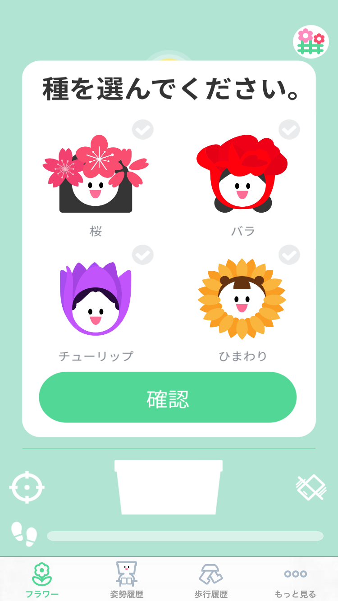
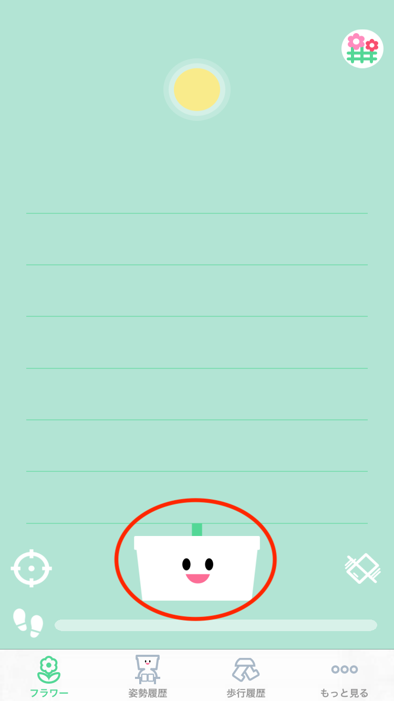
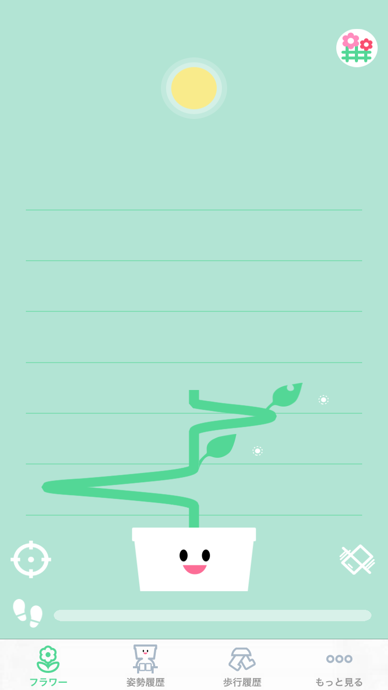
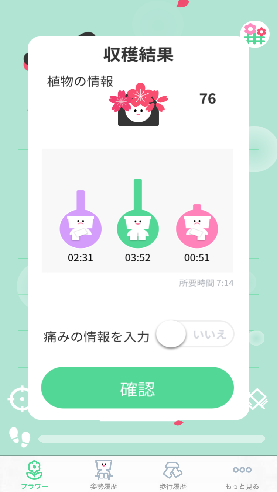

|
植物選択

|
|
植物植え完了

- 植物を植えると植木鉢の顔が出ます。
- もう植物は姿勢によって育ち始めます。
|
振動ボタン

- しばらく悪い姿勢を維持するとSEEDは振動で教えます。
- もし、振動が邪魔ならボタンを押して振動を消してください。
|
ガーデンボタン

- 育てた植物のリストを確認できるガーデン画面に移動するボタンです。
|
|
太陽
- 太陽は現在の姿勢をリアルタイムで表します。
- 左足を右方に曲がったり、右方に傾いて座っていると太陽は右方に移動します。
- 右足を左方に曲がったり、左方に傾いて座っていると太陽は左方に移動します。
|
|
育つ中

- 植物は太陽の方向によって育ちます。
- 悪い姿勢を長い時間維持すると植物が苦しいです。
|
のどが渇き

- 長時間座っていると植物の色が変わって喉が渇いてほしいです。
- 立って植物を回復してください。
|
歩みゲージ

- 植物を植えた以後の歩数は画面の下にゲージに反映します。
|
花に水をやる

- 歩みゲージが全部満たすと水をやる画面が出て植物に植物に水をあげることができます。
- 植物に水をやって健康な植物を育てください。
|
育てた植物

- 植物は最後の線まで育つと花を咲きます。植物が育ったらもう以上幹と歩数がアップデートができません。
- 植物を花壇に植え替えください。
|
|
植物結果

- 植物を植え替えする前に要約情報を確認できます。
- 選択の如何によってこの植物を育てる中に痛みがあった部位、痛み程度の記録ができます。
|
|
植物結果
- 植物が花を咲かせた後、「移植」をタップすると、この花壇に植物が移植されます。
- 今まで育てた植物を下から順に確認することができます。
- 植物をタップすると、その植物を再び見ることができます。
|
|
植物結果
- この花の種が選択された時間から移植された時間が下に表示されており、植物が育った形と花のスコアを確認することができます。
- 花をタップすると、この期間の「正しい姿勢/悪い姿勢の時間」と「入力した痛みの情報」も確認することができます。
|